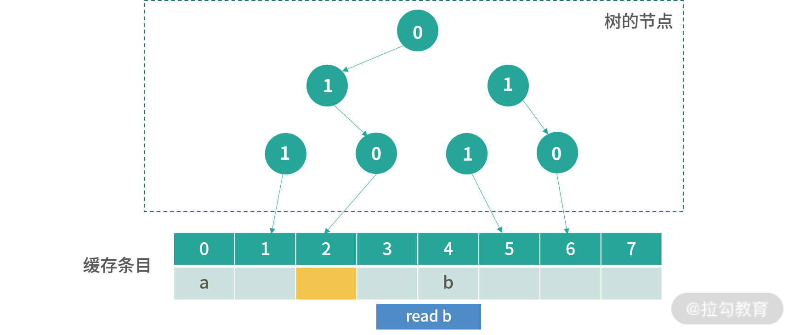
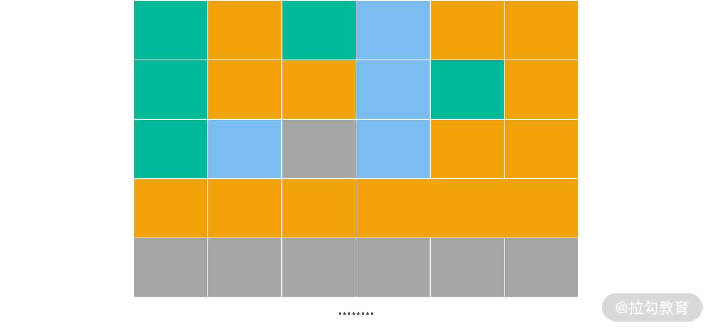

- 00 开篇词 为什么大厂面试必考操作系统？.md.html
- 00 课前必读 构建知识体系，可以这样做！.md.html
- 01 计算机是什么：“如何把程序写好”这个问题是可计算的吗？.md.html
- 02 程序的执行：相比 32 位，64 位的优势是什么？（上）.md.html
- 03 程序的执行：相比 32 位，64 位的优势是什么？（下）.md.html
- 04 构造复杂的程序：将一个递归函数转成非递归函数的通用方法.md.html
- 05 存储器分级：L1 Cache 比内存和 SSD 快多少倍？.md.html
- 05 (1) 加餐 练习题详解（一）.md.html
- 06 目录结构和文件管理指令：rm -rf 指令的作用是？.md.html
- 07 进程、重定向和管道指令：xargs 指令的作用是？.md.html
- 08 用户和权限管理指令： 请简述 Linux 权限划分的原则？.md.html
- 09 Linux 中的网络指令：如何查看一个域名有哪些 NS 记录？.md.html
- 10 软件的安装： 编译安装和包管理器安装有什么优势和劣势？.md.html
- 11 高级技巧之日志分析：利用 Linux 指令分析 Web 日志.md.html
- 12 高级技巧之集群部署：利用 Linux 指令同时在多台机器部署程序.md.html
- 12 (1)加餐 练习题详解（二）.md.html
- 13 操作系统内核：Linux 内核和 Windows 内核有什么区别？.md.html
- 14 用户态和内核态：用户态线程和内核态线程有什么区别？.md.html
- 15 中断和中断向量：Javajs 等语言为什么可以捕获到键盘输入？.md.html
- 16 WinMacUnixLinux 的区别和联系：为什么 Debian 漏洞排名第一还这么多人用？.md.html
- 16 (1)加餐 练习题详解（三）.md.html
- 17 进程和线程：进程的开销比线程大在了哪里？.md.html
- 18 锁、信号量和分布式锁：如何控制同一时间只有 2 个线程运行？.md.html
- 19 乐观锁、区块链：除了上锁还有哪些并发控制方法？.md.html
- 20 线程的调度：线程调度都有哪些方法？.md.html
- 21 哲学家就餐问题：什么情况下会触发饥饿和死锁？.md.html
- 22 进程间通信： 进程间通信都有哪些方法？.md.html
- 23 分析服务的特性：我的服务应该开多少个进程、多少个线程？.md.html
- 23 (1)加餐 练习题详解（四）.md.html
- 24 虚拟内存 ：一个程序最多能使用多少内存？.md.html
- 25 内存管理单元： 什么情况下使用大内存分页？.md.html
- 26 缓存置换算法： LRU 用什么数据结构实现更合理？.md.html
- 27 内存回收上篇：如何解决内存的循环引用问题？.md.html
- 28 内存回收下篇：三色标记-清除算法是怎么回事？.md.html
- 28 (1)加餐 练习题详解（五）.md.html
- 29 Linux 下的各个目录有什么作用？.md.html
- 30 文件系统的底层实现：FAT、NTFS 和 Ext3 有什么区别？.md.html
- 31 数据库文件系统实例：MySQL 中 B 树和 B+ 树有什么区别？.md.html
- 32 HDFS 介绍：分布式文件系统是怎么回事？.md.html
- 32 (1)加餐 练习题详解（六）.md.html
- 33 互联网协议群（TCPIP）：多路复用是怎么回事？.md.html
- 34 UDP 协议：UDP 和 TCP 相比快在哪里？.md.html
- 35 Linux 的 IO 模式：selectpollepoll 有什么区别？.md.html
- 36 公私钥体系和网络安全：什么是中间人攻击？.md.html
- 36 (1)加餐 练习题详解（七）.md.html
- 37 虚拟化技术介绍：VMware 和 Docker 的区别？.md.html
- 38 容器编排技术：如何利用 K8s 和 Docker Swarm 管理微服务？.md.html
- 39 Linux 架构优秀在哪里.md.html
- 40 商业操作系统：电商操作系统是不是一个噱头？.md.html
- 40 (1)加餐 练习题详解（八）.md.html
- 41 结束语 论程序员的发展——信仰、选择和博弈.md.html
- 捐赠
28 (1)加餐 练习题详解（五）
今天我会带你把《模块五：内存管理》中涉及的课后练习题，逐一讲解，并给出每个课时练习题的解题思路和答案。
练习题详解
24 | 虚拟内存 ：一个程序最多能使用多少内存？
【问题】可不可以利用哈希表直接将页编号映射到 Frame 编号？
【解析】按照普通页表的设计，如果页大小是 4K，1G 空间内存需要 262144 个页表条目，如果每个条目用 4 个字节来存储，就需要 1M 的空间。那么创建 1T 的虚拟内存，就需要 1G 的空间。这意味着操作系统需要在启动时，就把这块需要的内存空间预留出来。
正因为我们设计的虚拟内存往往大于实际的内存，因此在历史上出现过各种各样节省页表空间的方案，其中就有用 HashTable 存储页表的设计。HashTable 是一种将键（Key）映射到值（Value）的数据结构。在页表的例子中，键是页编号，值是 Frame 编号。 你可以把这个 HashTable 看作存储了很多
为了方便你理解下面的内容，我绘制了一张图。下图使用了一个有 1024 个条目的 HashTable。当查找页面 50000 的时候，先通过哈希函数 h 计算出 50000 对应的 HashTable 条目是 24。HashTable 的每个条目都是一个链表，链表的每个节点是一个 PageId 和 FrameId 的组合。接下来，算法会遍历条目 24 上的链表，然后找到 Page = 50000 的节点。取出 Frame 编号为 1232。

通常虚拟内存会有非常多的页，但是只有少数的页会被使用到。这种情况下，用传统的页表，会导致过多的空间被预分配。而基于 HashTable 的设计则不同，可以先分配少量的项，比如在上图中，先只分配了 1024 个项。每次查找一个页表编号发现不存在的情况，再去对应位置的链表中添加一个具体的键-值对。 这样就大大节省了内存。
当然节省空间也是有代价的，这会直接导致性能下降，因为比起传统页表我们可以直接通过页的编号知道页表条目，基于 HashTable 的做法需要先进行一次 Hash 函数的计算，然后再遍历一次链表。 最后，HashTable 的时间复杂度可以看作 O(k)，k 为 HashTable 表中总共的
25 | 内存管理单元：什么情况下使用大内存分页？
【问题】Java 和 Go 默认需不需要开启大内存分页?
【解析】在回答什么情况下使用前，我们先说说这两个语言对大内存分页的支持。
当然，两门语言能够使用大内存分页的前提条件，是通过“25 讲”中演示的方式，开启了操作系统的大内存分页。满足这个条件后，我们再来说说两门语言还需要做哪些配置。
Go 语言
Go 是一门编译执行的语言。在 Go 编译器的前端，源代码被转化为 AST；在 Go 编译器的后端，AST 经过若干优化步骤，转化为目标机器代码。因此 Go 的内存分配程序基本上可以直接和操作系统的 API 对应。因为 Go 没有虚拟机。
而且 Go 提供了一个底层的库 syscall，直接支持上百个系统调用。 具体请参考Go 的官方文档。其中的 syscall.madvise 系统调用，可以直接提示操作系统某个内存区间的程序是否使用大内存分页技术加速 TLB 的访问。具体可以参考 Linux 中madise 的文档，这个工具的作用主要是提示操作系统如何使用某个区域的内存，开启大内存分页是它之中的一个选项。
下面的程序通过 malloc 分配内存，然后用 madvise 提示操作系统使用大内存分页的示例：
#include <sys/mman.h>
size_t size = 256*1024*1024;
char* mymemory = malloc(size);
madvise(mymemory, size, MADV_HUGEPAGE);
如果放到 Go 语言，那么需要用的是runtime.sysAlloc和syscall.Madvise函数。
Java 语言
JVM 是一个虚拟机，应用了Just-In-Time 在虚拟指令执行的过程中，将虚拟指令转换为机器码执行。 JVM 自己有一套完整的动态内存管理方案，而且提供了很多内存管理工具可选。在使用 JVM 时，虽然 Java 提供了 UnSafe 类帮助我们执行底层操作，但是通常情况下我们不会使用UnSafe 类。一方面 UnSafe 类功能不全，另一方面看名字就知道它过于危险。
Java 语言在“25 讲”中提到过有一个虚拟机参数：XX:+UseLargePages，开启这个参数，JVM 会开始尝试使用大内存分页。
那么到底该不该用大内存分页？
首先可以分析下你应用的特性，看看有没有大内存分页的需求。通常 OS 是 4K，思考下你有没有需要反复用到大内存分页的场景。
另外你可以使用perf指令衡量你系统的一些性能指标，其中就包括iTLB-load-miss可以用来衡量 TLB Miss。 如果发现自己系统的 TLB Miss 较高，那么可以深入分析是否需要开启大内存分页。
26 | 缓存置换算法： LRU 用什么数据结构实现更合理？
【问题】在 TLB 多路组相联缓存设计中（比如 8-way），如何实现 LRU 缓存？
【解析】TLB 是 CPU 的一个“零件”，在 TLB 的设计当中不可能再去内存中创建数据结构。因此在 8 路组相联缓存设计中，我们每次只需要从 8 个缓存条目中选择 Least Recently Used 缓存。
增加累计值
先说一种方法， 比如用硬件同时比较 8 个缓存中记录的缓存使用次数。这种方案需要做到 2 点：
- 缓存条目中需要额外的空间记录条目的使用次数（累计位）。类似我们在页表设计中讨论的基于计时器的读位操作——每过一段时间就自动将读位累计到一个累计位上。
- 硬件能够实现一个快速查询最小值的算法。
第 1 种方法会产生额外的空间开销，还需要定时器配合，成本较高。 注意缓存是很贵的，对于缓存空间利用自然能省则省。而第 2 种方法也需要额外的硬件设计。那么，有没有更好的方案呢？
1bit 模拟 LRU
一个更好的方案就是模拟 LRU，我们可以考虑继续采用上面的方式，但是每个缓存条目只拿出一个 LRU 位（bit）来描述缓存近期有没有被使用过。 缓存置换时只是查找 LRU 位等于 0 的条目置换。
还有一个基于这种设计更好的方案，可以考虑在所有 LRU 位都被置 1 的时候，清除 8 个条目中的 LRU 位（置零），这样可以节省一个计时器。 相当于发生内存操作，LRU 位置 1；8 个位置都被使用，LRU 都置 0。
搜索树模拟 LRU
最后我再介绍一个巧妙的方法——用搜索树模拟 LRU。
对于一个 8 路组相联缓存，这个方法需要 8-1 = 7bit 去构造一个树。如下图所示：
8 个缓存条目用 7 个节点控制，每个节点是 1 位。0 代表节点指向左边，1 代表节点指向右边。
初始化的时候，所有节点都指向左边，如下图所示：
接下来每次写入，会从根节点开始寻找，顺着箭头方向（0 向左，1 向右），找到下一个更新方向。比如现在图中下一个要更新的位置是 0。更新完成后，所有路径上的节点箭头都会反转，也就是 0 变成 1，1 变成 0。
上图是read a后的结果，之前路径上所有的箭头都被反转，现在看到下一个位置是 4，我用橘黄色进行了标记。

上图是发生操作read b之后的结果，现在橘黄色可以更新的位置是 2。

上图是读取 c 后的情况。后面我不一一绘出，假设后面的读取顺序是d,e,f,g,h，那么缓存会变成如下图所示的结果：

这个时候用户如果读取了已经存在的值，比如说c，那么指向c那路箭头会被翻转，下图是read c的结果：
这个结果并没有改变下一个更新的位置，但是翻转了指向 c 的路径。 如果要读取x，那么这个时候就会覆盖橘黄色的位置。
因此，本质上这种树状的方式，其实是在构造一种先入先出的顺序。任何一个节点箭头指向的子节点，应该被先淘汰（最早被使用）。
这是一个我个人觉得非常天才的设计，因为如果在这个地方构造一个队列，然后每次都把命中的元素的当前位置移动到队列尾部。就至少需要构造一个链表，而链表的每个节点都至少要有当前的值和 next 指针，这就需要创建复杂的数据结构。在内存中创建复杂的数据结构轻而易举，但是在 CPU 中就非常困难。 所以这种基于 bit-tree，就轻松地解决了这个问题。当然，这是一个模拟 LRU 的情况，你还是可以构造出违反 LRU 缓存的顺序。
27 | 内存回收上篇：如何解决内存的循环引用问题？
28 | 内存回收下篇：三色标记-清除算法是怎么回事？
【问题】如果内存太大了，无论是标记还是清除速度都很慢，执行一次完整的 GC 速度下降该如何处理？
【解析】当应用申请到的内存很大的时候，如果其中内部对象太多。只简单划分几个生代，每个生代占用的内存都很大，这个时候使用 GC 性能就会很糟糕。
一种参考的解决方案就是将内存划分成很多个小块，类似在应用内部再做一个虚拟内存层。 每个小块可能执行不同的内存回收策略。

上图中绿色、蓝色和橘黄色代表 3 种不同的区域。绿色区域中对象存活概率最低（类似 Java 的 Eden），蓝色生存概率上升，橘黄色最高（类似 Java 的老生代）。灰色区域代表应用从操作系统中已经申请了，但尚未使用的内存。通过这种划分方法，每个区域中进行 GC 的开销都大大减少。Java 目前默认的内存回收器 G1，就是采用上面的策略。
总结
这个模块我们学习了内存管理。通过内存管理的学习，我希望你开始理解虚拟化的价值，内存管理部分的虚拟化，是一种应对资源稀缺、增加资源流动性的手段（听起来那么像银行印的货币）。
既然内存资源可以虚拟化，那么计算资源可以虚拟化吗？用户发生大量的请求时，响应用户请求的处理程序可以虚拟化吗？当消息太大的情况下，一个队列可以虚拟化吗？当浏览的页面很大时，用户看到的可视区域可以虚拟化吗？——我觉得这些问题都是值得大家深思的，如果你对这几个问题有什么想法，也欢迎写在留言区，大家一起交流。
另外，缓存设计部分的重点在于算法的掌握。因为你可以从这些算法中获得很多处理实际问题的思路，服务端同学会反思 MySQL/Redis 的使用，前端同学会反思浏览器缓存、Native 缓存、CDN 的使用。很多时候，工具还会给你提供参数，那么你应该用哪种缓存置换算法，你的目的是什么？我们只学习了如何收集和操作系统相关的性能指标，但当你面对应用的时候，还会碰到更多的指标，这个时候就需要你在实战中继续进步和分析了。
这个模块还有一个重要的课题，就是内存回收，这块的重点在于理解内存回收器，你需要关注：暂停时间、足迹和吞吐量、实时性，还需要知道如何针对自己的业务场景，分析这几个指标的要求，学会选择不同的 GC 算法，配置不同的 GC 参数。
© 2019 - 2023 Liangliang Lee. Powered by gin and hexo-theme-book.